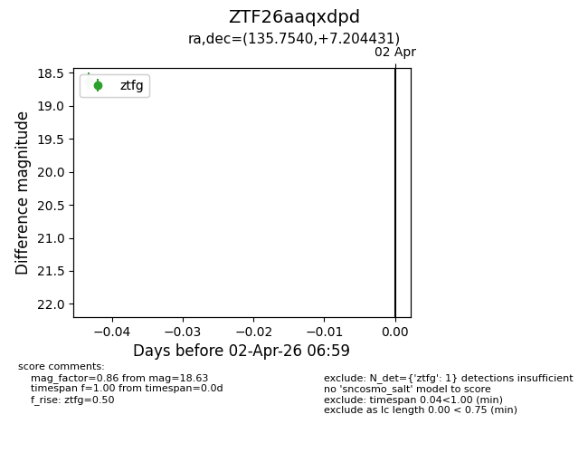
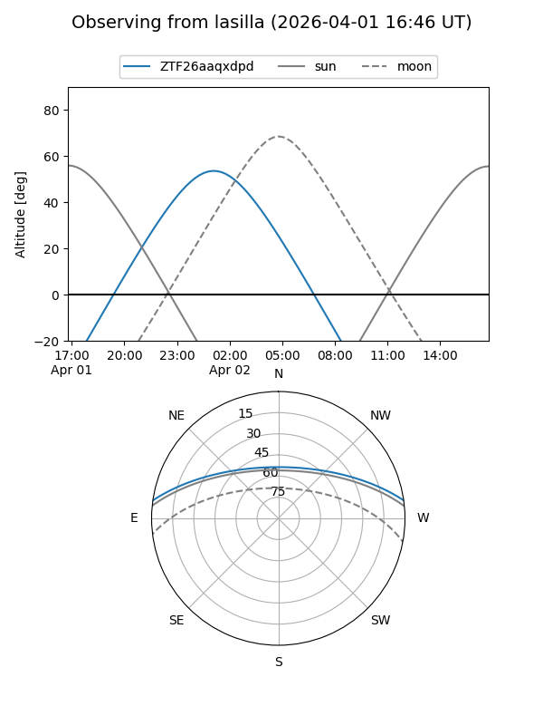
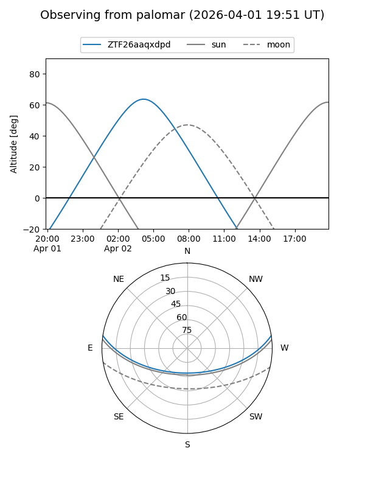

ZTF26aaqxdpd
Target ZTF26aaqxdpd at 2026-04-02 07:03
Aliases and brokers:
FINK: link
Lasair: link
ALeRCE: link
alt names
ZTF26aaqxdpd (ztf,fink_ztf)
Coordinates:
equatorial (ra, dec) = 135.7540,+7.20443
equatorial (HMS+DMS) = 09:03:00.97,+07:12:15.95
galactic (l, b) = (222.0750,+32.46041)
Flags:
Photometry:
last ztfg=18.63
1 ztfg detections
Lightcurve

Visibility


Additional plots